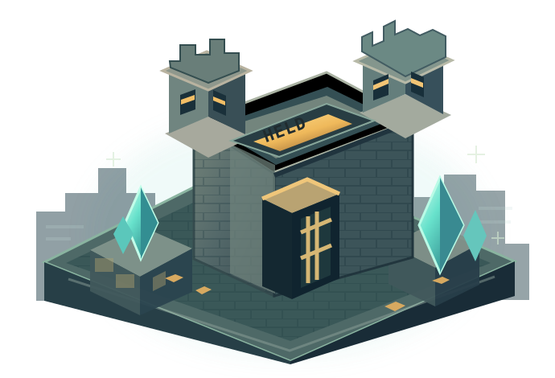

UN NUOVO MONDO PRISON JAVA EDITION
SCAVA. COMBATTI.
CONQUISTA.
Crea il tuo impero: miniere evolutive, enchantments, gang, celle, raid e un mondo pieno di sfide. Benvenuto su HeldPrisons.
BETA PRIVATA IN PREPARAZIONE

[ HP / WORLD 01 ]
PRISON UNIVERSE ✦
◈
EDIZIONEMINECRAFT JAVA
▣
FASE ATTUALESVILUPPO ATTIVO
⛏
➜GAMEPLAYCOSMIC PRISON
AGGIORNAMENTISEGUI LA BETA ↗
/ SCEGLI DA DOVE INIZIARE
TUTTE LE MECCANICHE ↗IL TUO PORTALE HELD.
01 / GAMEPLAY
LE MECCANICHE
Mining, Cosmic Energy, Wormhole, gang, raid e molto altro.
ESPLORA ↗02 / ENCYCLOPEDIA
WIKI & GUIDE
Le guide per capire ogni sistema e preparare la tua strategia.
LEGGI LA WIKI ↗03 / EVENTS
EVENTI & SFIDE
Meteoriti, KOTH, LMS, Prison Break ed eventi dinamici.
SCOPRI GLI EVENTI ↗04 / RANKINGS
CLASSIFICHE
Le leaderboard verranno collegate alle statistiche reali del server.
VEDI CLASSIFICHE ↗/ DEVELOPMENT UPDATEPROGETTO IN CORSO
STIAMO COSTRUENDO
LA PROSSIMA ERA PRISON.
Il progetto cresce attraverso test di gameplay, bilanciamento e nuovi contenuti. Le date di apertura saranno comunicate ufficialmente.
SEGUI IL PROGETTO